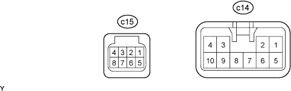
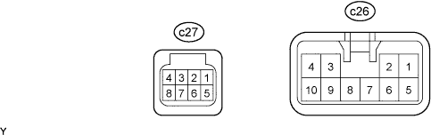

FRONT POWER SEAT CONTROL SYSTEM (w/ Seat Position Memory System) > TERMINALS OF ECU |
| CHECK POSITION CONTROL ECU AND SWITCH (for LHD) |

Disconnect the c14 and c15 switch connectors.
Measure the voltage and resistance according to the value(s) in the table below.
| Terminal No. (Symbol) | Wiring Color | Terminal Description | Condition | Specified Condition |
| c14-1 (GND) - Body ground | W-B - Body ground | Ground | Always | Below 1 Ω |
| c14-5 (+B) - c14-1 (GND) | L - W-B | Power source | Always | 11 to 14 V |
| c15-4 (IG) - c14-1 (GND) | G - W-B | Engine switch signal | Engine switch off | Below 1 V |
| Engine switch on (IG) | 11 to 14 V | |||
| c15-8 (SYSB) - c14-1 (GND) | R - W-B | System power source | Always | 11 to 14 V |
Reconnect the c14 and c15 switch connectors.
Measure the voltage according to the value(s) in the table below.
| Terminal No. (Symbol) | Wiring Color | Terminal Description | Condition | Specified Condition |
| c14-2 (SLD+) - c14-1 (GND) | B - W-B | Sliding motor signal (forward) | Slide switch off | Below 1 V |
| Slide switch front on | 11 to 14 V | |||
| c14-3 (SLD-) - c14-1 (GND) | P - W-B | Sliding motor signal (rearward) | Slide switch off | Below 1 V |
| Slide switch rear on | 11 to 14 V | |||
| c14-6 (FRV+) - c14-1 (GND) | R - W-B | Front vertical motor signal (upward) | Front vertical switch off | Below 1 V |
| Front vertical switch up on | 11 to 14 V | |||
| c14-4 (FRV-) - c14-1 (GND) | LG - W-B | Front vertical motor signal (downward) | Front vertical switch off | Below 1 V |
| Front vertical switch down on | 11 to 14 V | |||
| c14-7 (LFT+) - c14-1 (GND) | G - W-B | Lifter motor signal (upward) | Lifter switch off | Below 1 V |
| Lifter switch up on | 11 to 14 V | |||
| c14-9 (LFT-) - c14-1 (GND) | W - W-B | Lifter motor signal (downward) | Lifter switch off | Below 1 V |
| Lifter switch down on | 11 to 14 V | |||
| c14-8 (RCL+) - c14-1 (GND) | GR - W-B | Reclining motor signal (forward) | Reclining switch off | Below 1 V |
| Reclining switch front on | 11 to 14 V | |||
| c14-10 (RCL-) - c14-1 (GND) | Y - W-B | Reclining motor signal (rearward) | Reclining switch off | Below 1 V |
| Reclining switch rear on | 11 to 14 V |
| CHECK POSITION CONTROL ECU AND SWITCH (for RHD) |

Disconnect the c26 and c27 switch connectors.
Measure the voltage and resistance according to the value(s) in the table below.
| Terminal No. (Symbol) | Wiring Color | Terminal Description | Condition | Specified Condition |
| c26-1 (GND) - Body ground | W-B - Body ground | Ground | Always | Below 1 Ω |
| c26-5 (+B) - c26-1 (GND) | L - W-B | Power source | Always | 11 to 14 V |
| c27-4 (IG) - c26-1 (GND) | G - W-B | Engine switch signal | Engine switch off | Below 1 V |
| Engine switch on (IG) | 11 to 14 V | |||
| c27-8 (SYSB) - c26-1 (GND) | R - W-B | System power source | Always | 11 to 14 V |
Reconnect the c26 and c27 switch connectors.
Measure the voltage according to the value(s) in the table below.
| Terminal No. (Symbol) | Wiring Color | Terminal Description | Condition | Specified Condition |
| c26-2 (SLD+) - c26-1 (GND) | B - W-B | Sliding motor signal (forward) | Slide switch off | Below 1 V |
| Slide switch front on | 11 to 14 V | |||
| c26-3 (SLD-) - c26-1 (GND) | P - W-B | Sliding motor signal (rearward) | Slide switch off | Below 1 V |
| Slide switch rear on | 11 to 14 V | |||
| c26-6 (FRV+) - c26-1 (GND) | R - W-B | Front vertical motor signal (upward) | Front vertical switch off | Below 1 V |
| Front vertical switch up on | 11 to 14 V | |||
| c26-4 (FRV-) - c26-1 (GND) | LG - W-B | Front vertical motor signal (downward) | Front vertical switch off | Below 1 V |
| Front vertical switch down on | 11 to 14 V | |||
| c26-7 (LFT+) - c26-1 (GND) | G - W-B | Lifter motor signal (upward) | Lifter switch off | Below 1 V |
| Lifter switch up on | 11 to 14 V | |||
| c26-9 (LFT-) - c26-1 (GND) | W - W-B | Lifter motor signal (downward) | Lifter switch off | Below 1 V |
| Lifter switch down on | 11 to 14 V | |||
| c26-8 (RCL+) - c26-1 (GND) | GR - W-B | Reclining motor signal (forward) | Reclining switch off | Below 1 V |
| Reclining switch front on | 11 to 14 V | |||
| c26-10 (RCL-) - c26-1 (GND) | Y - W-B | Reclining motor signal (rearward) | Reclining switch off | Below 1 V |
| Reclining switch rear on | 11 to 14 V |
| CHECK OUTER MIRROR CONTROL ECU (for LHD) |
Disconnect the I17 and I18 ECU connectors.
Measure the voltage and resistance according to the value(s) in the table below.
| Terminal No. (Symbol) | Wiring Color | Terminal Description | Condition | Specified Condition |
| I18-10 (MSWE) - I17-9 (GND) | BR - W-B | Ground for seat memory switch | Always | Below 1 Ω |
| I17-9 (GND) - Body ground | W-B - Body ground | Ground | Always | Below 1 Ω |
| I17-3 (B) - I17-9 (GND) | R - W-B | Battery (ECU power source) | Always | 11 to 14 V |
| I17-4 (ACC) - I17-9 (GND) | GR - W-B | Engine switch (ACC) power source supply | Engine switch off | Below 1 V |
| Engine switch on (ACC) | 11 to 14 V |
Reconnect the I17 and I18 ECU connectors.
Measure the voltage according to the value(s) in the table below.
| Terminal No. (Symbol) | Wiring Color | Terminal Description | Condition | Specified Condition |
| I18-6 (M3) - I18-10 (MSWE) | B - BR | Seat memory switch 3 signal for seat memory switch | Seat memory switch 3 on | 11 to 14 V |
| Seat memory switch 3 off | Below 1 V | |||
| I18-7 (M2) - I18-10 (MSWE) | W - BR | Seat memory switch 2 signal for seat memory switch | Seat memory switch 2 on | 11 to 14 V |
| Seat memory switch 2 off | Below 1 V | |||
| I18-8 (M1) - I18-10 (MSWE) | G - BR | Seat memory switch 1 signal for seat memory switch | Seat memory switch 1 on | 11 to 14 V |
| Seat memory switch 1 off | Below 1 V | |||
| I18-9 (MM) - I18-10 (MSWE) | B - BR | Seat memory SET switch signal for seat memory switch | Seat memory SET switch on | 11 to 14 V |
| Seat memory SET switch off | Below 1 V |
| CHECK OUTER MIRROR CONTROL ECU (for RHD) |
Disconnect the I23 and I24 ECU connectors.
Measure the voltage and resistance according to the value(s) in the table below.
| Terminal No. (Symbol) | Wiring Color | Terminal Description | Condition | Specified Condition |
| I24-10 (MSWE) - I23-9 (GND) | BR - W-B | Ground for seat memory switch | Always | Below 1 Ω |
| I23-9 (GND) - Body ground | W-B - Body ground | Ground | Always | Below 1 Ω |
| I23-3 (B) - I23-9 (GND) | R - W-B | Battery (ECU power source) | Always | 11 to 14 V |
| I23-4 (ACC) - I23-9 (GND) | GR - W-B | Engine switch (ACC) power source supply | Engine switch off | Below 1 V |
| Engine switch on (ACC) | 11 to 14 V |
Reconnect the I23 and I24 ECU connectors.
Measure the voltage according to the value(s) in the table below.
| Terminal No. (Symbol) | Wiring Color | Terminal Description | Condition | Specified Condition |
| I24-6 (M3) - I24-10 (MSWE) | B - BR | Seat memory switch 3 signal for seat memory switch | Seat memory switch 3 on | 11 to 14 V |
| Seat memory switch 3 off | Below 1 V | |||
| I24-7 (M2) - I24-10 (MSWE) | W - BR | Seat memory switch 2 signal for seat memory switch | Seat memory switch 2 on | 11 to 14 V |
| Seat memory switch 2 off | Below 1 V | |||
| I24-8 (M1) - I24-10 (MSWE) | G - BR | Seat memory switch 1 signal for seat memory switch | Seat memory switch 1 on | 11 to 14 V |
| Seat memory switch 1 off | Below 1 V | |||
| I24-9 (MM) - I24-10 (MSWE) | B - BR | Seat memory SET switch signal for seat memory switch | Seat memory SET switch on | 11 to 14 V |
| Seat memory SET switch off | Below 1 V |